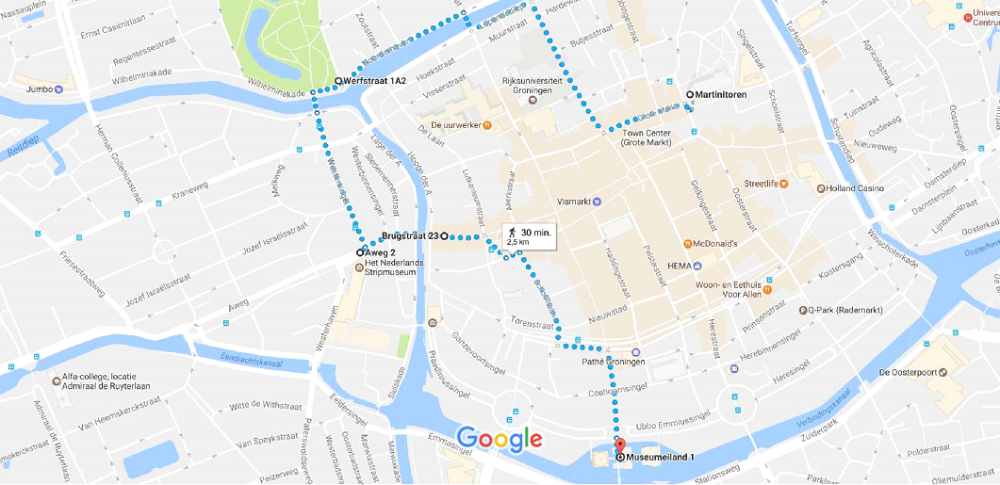

Het startpunt is het Centraal Station en vanaf daar loopt u naar het Groninger Museum.
Vanaf het Groninger Museum kunt u via bovenstaande wegen naar de Martinitoren komen.

Vanaf het Centraal Station kunt u ook uw weg vervolgen naar het Noorderplantsoen.
Vanaf het Centraal Station kunt u ook naar het Stripmuseum lopen.
De laatste bezienswaardigheid is het Scheepvaartmuseum. Zie bovenstaande route.
Als u alle bezienswaardigheden achter elkaar wilt zien volgt u bovenstaande route.